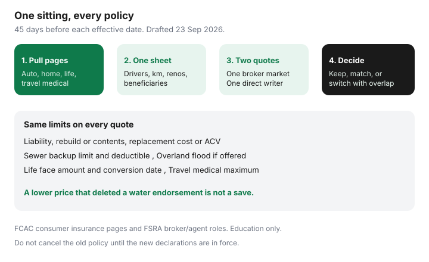

Insurance · Canada
Annual Insurance Review Checklist for Canadian Households: One Sitting, Every Policy
Policies renew while the household changes. A teenager gets a licence. The basement gets finished. Annual kilometres drop because two days a week are at home. A 20-year term still shows last decade’s mortgage. None of that updates itself. The renewal notice is a bill, not a review. This sitting puts auto, home or tenant, life, and travel medical on one sheet, forty-five days before each date that actually matters.
It is a household method, not a product ranking. Auto shopping mechanics — broker versus direct, winter tires, telematics, deductibles, kilometres, and the ICBC or SAAQ split — already live in the Transportation guides linked below. Tenant and home shopping, bundles, condo deductibles, and raising a home deductible live in Housing. Use those pages for the lever. Use this page for the calendar and the decision.
Disclosure: Broker quote portals, home-insurance quote flows, and auto comparison sites are offer types. Saving Optimizer may earn a commission if we later add partner links. We do not currently claim insurer or broker partnerships. We do not sell policies. Education only, not insurance advice. Figures are date-stamped 23 Sep 2026.
Key takeaways
- Put a reminder 45 days before each auto, home or tenant, life, and travel date — not the week the withdrawal hits.
- One sheet: people, kilometres, renovations, and life events. Stale facts are how premiums and claims both go wrong.
- Statutory minimums and a market-value guess are floors. Rebuild cost, liability, and a life-needs gap are the numbers to shop.
- Discounts are line items. A loyalty sticker is not the same thing as a multi-policy discount or a clean claims record.
- Get one broker-market quote and one direct-writer quote on identical limits before you keep, negotiate, or switch.
- Never cancel the old contract until the new one is in force in writing. A gap is not a savings plan.
Calendar 45 days before each major renewal (auto, home/tenant, life, travel)
Forty-five days is a household rule, not a statute. It is long enough to pull declarations, correct a kilometre figure, and wait for a life-insurance decision that needs underwriting. Seven days is long enough only to pay whatever auto-renewed.
| Contract | Date that matters | What 45 days is for |
|---|---|---|
| Auto | Policy renewal on the declarations | Same-coverage quotes. Province changes the shop: Ontario broker versus direct, B.C. optional ICBC levers, Québec private damage on top of SAAQ. Do not treat those as one national form. |
| Home or tenant | Renewal on the declarations | Rebuild or contents limit, liability, and whether sewer backup and overland flood are still on the page. |
| Life | Anniversary, plus any conversion or renewal deadline inside the next 18 months | Term often stays level for 10, 20, or 30 years. The dangerous date is the conversion window or the end of the level premium, not a fake “annual renewal.” |
| Travel medical | Departure date, and the annual multi-trip renewal if you hold one | Buy before you leave. A new prescription can restart a stability clock. Do not book the non-refundable week and shop medical the night before. |
| Group life or employer travel | Job change, leave, or open enrolment | The certificate usually ends when the job ends. Write the dollar amount. Do not assume it survived a layoff. |
If the car renews in March and the house renews in October, you still fill the sheet once. You act twice. A shared note in a calendar both adults can see beats a screenshot in one person’s email.

Update assets, drivers, km, renovations, and life events on one sheet
Insurers price what you told them last time. A finished basement that never made the declarations is a claim problem, not a discount. A commute that fell from 18,000 km to 9,000 km is a premium problem if you never said so. Write facts you can defend.
| Fact | Which contract it hits | Why it changes the sitting |
|---|---|---|
| Licensed drivers and occasional drivers | Auto | A new G2 or a child away at school is an underwriting fact. Hiding a driver is not a savings tactic. |
| Annual kilometres and use (commute, pleasure, business) | Auto | Mileage bands are a legal lever. The how-to for honest kilometres, deductibles, and vehicle rate group is the Transportation premium guide. |
| Renovations, finished basement, suite, roof age | Home, and sometimes condo unit | Rebuild cost is not last year’s number. A rental suite can change occupancy. Say it before a loss. |
| Contents and scheduled items | Home, tenant, condo | Jewellery, bikes, and cameras often sit on sub-limits. A $4,000 e-bike is a scheduled-item question, not a hope. Theft prevention for e-bikes is covered separately. |
| Marriage, separation, new child, death, move | Life beneficiaries, auto, home | A beneficiary line from a previous relationship does not fix itself. Update it in writing with the insurer. |
| Mortgage balance and lender | Home, life | The lender may need to be the loss payee. The mortgage balance is an input to the life-needs worksheet, not a reason to buy creditor insurance at the signing table. |
Park the annual premium in a monthly sinking fund if the withdrawal still surprises you. That cash habit is the property-tax and insurance pot, not a second policy.
Coverage minimums vs actual rebuild/liability needs
Every province sets a floor for compulsory auto insurance. That floor is a legal minimum, not a household target. The dollar amount is different in Ontario, British Columbia, and Québec, and the public injury systems in B.C. and Québec are not Ontario tort. Read the regulator’s page for your province — FSRA for Ontario auto consumers, ICBC for Basic versus optional, SAAQ and the AMF for Québec damage. Then ask a simpler question: if a serious injury exceeded that floor, what assets would be exposed? Many households shop $1 million or $2 million of liability because the floor is not the risk. Confirm the number on a quote. Do not copy a neighbour’s limit from memory.
Home and tenant follow the same logic. Market value includes land. Rebuild cost does not. The Insurance Bureau of Canada’s home-coverage pages treat sewer backup and overland flood as optional, separate from sudden internal water escape. Dropping those endorsements to “save” on a renewal is a coverage cut. The shopping worksheet is shop home insurance without gutting cover. Tenants still start from the lease’s liability line — often $1 million or $2 million — in the tenant comparison.
Life has no statutory “minimum” that fits a family. A round $250,000 or a 10-times-salary slogan is not a needs test. Run the worksheet. Group life from work counts only while the certificate is in force.
Write three limits on the sheet before you ask for a price: auto liability, dwelling or contents settlement basis, and life face amount. A cheaper premium with any of those cut is not the winner.
Discount audit: loyalty, multi-policy, association, winter tires, alarms
Ask for each discount as a dollar amount on the renewal, not as a percentage in an ad. Stacking three brochure rates in your head is how people invent a price the insurer never filed.
- Multi-policy. Consumer explainers often cite a 5–15% band when auto and home or tenant sit with the same insurer. It is not a law. Run the bundle versus unbundle worksheet on identical cover.
- Loyalty or tenure. A sticker for staying is not the same as a clean record. The rate-creep test is the loyalty guide.
- Claims-free. Your history follows you through industry reports. The old insurer’s named “loyalty” percentage usually does not.
- Association, alumni, or employer group. The discount may require a specific insurer. Compare the net price with a non-association quote on the same limits.
- Winter tires. Ontario’s mandatory offer and the usual band are in the winter-tire discount guide. Do not assume another province copies it.
- Alarms and leak sensors. Monitored burglary, fire, or water-leak devices sometimes change the price. Ask which device the insurer will accept and whether a certificate is required. There is no national percentage.
- Telematics. Usage-based programs are a privacy and surcharge question, not a free extra. The decision page is telematics: is the discount worth it.
Quote at least one broker market and one direct writer
FSRA’s consumer page on working with a broker, agent, or insurance company (used 23 Sep 2026) is the Ontario auto frame: a broker can shop more than one market on your behalf; an agent or a direct writer sells the company they represent. Property insurance is not the same statute, but the household test is the same. One broker submission shows a panel. One direct-writer quote shows a company that will not appear on that panel. An aggregator tab is a third path only if you then read the policy you would actually bind.
Send both sides the same sheet: limits, deductibles, drivers, kilometres, water endorsements, settlement basis (replacement cost or actual cash value). The broker-versus-direct auto guide is the car version of that discipline. For the house, do not let a lower price delete sewer backup. Broker quote portals and direct quote flows are offer types. We do not rank firms and we do not claim a live partnership.
- Export or photograph every declarations page.
- Fill the sheet in the section above.
- Ask a broker for quotes from at least two markets, in writing.
- Ask one direct writer for the same limits, in writing.
- Reject any quote that will not list water endorsements and deductibles on the proposal.
Decide keep / negotiate / switch with effective-date overlap
Three outcomes are legitimate. Sleepwalking into renewal is not.
| If the outside quote is… | Do this |
|---|---|
| Within a small gap, and the incumbent still has the water limits and settlement basis you want | Keep. Switching friction is not free. A cleaner contract can be worth a modest difference. |
| Meaningfully lower on the same limits | Negotiate. Send the written competing quote and ask the incumbent to match. The script is in the loyalty guide. Get the answer in writing. |
| Lower, and the incumbent will not match the same limits | Switch only after the new contract is bound. Set the new effective date on or before the old expiry. Cancel the old policy for the following day, or the same day if both insurers confirm there is no gap and no double-charge you did not agree to. |
Home policies with a mortgage need the lender named as loss payee on the new declarations before you cancel. Auto in a compulsory province should not show a lapse — a gap can cost more than the premium you were chasing. Life is stricter still: do not lapse the old policy until the new one is delivered and the first premium is paid. Replacing a permanent policy can forfeit cash value. Read that illustration before you chase a term price; the framework is term versus whole life.
Mid-term cancellation can be short-rated. FSRA’s habit for Ontario drivers — do not cancel only to chase a rate without understanding the penalty — is a useful caution on property too. Prefer the renewal date.
Sources & date stamps
- Financial Consumer Agency of Canada, Get insurance — consumer starting point for comparing coverage, not only price (used 23 Sep 2026).
- FSRA, working with your broker, agent, or insurance company — Ontario auto shopping roles (used 23 Sep 2026).
- Insurance Bureau of Canada, types of home coverage and flood-and-water pages — sewer backup and overland flood typically optional (used 23 Sep 2026).
- Saving Optimizer Transportation and Housing insurance guides linked above — province-specific auto levers and home worksheets, not repeated here.
Frequently asked questions
How often should a Canadian household review insurance?
Put a reminder 45 days before each auto, home or tenant, life, and travel date. Life often stays level for years; the date that matters is a conversion or renewal deadline, not a fake annual bill. Fill one sheet once, then act before each effective date.
What belongs on the review sheet?
Drivers, annual kilometres, renovations, mortgage balance, beneficiaries, and the limits and deductibles already on the declarations. Stale kilometres and an unfinished-basement limit after you finished the basement are how premiums and claims both go wrong.
Is one quote enough?
Get at least one broker-market quote and one direct-writer quote on the same limits, including water endorsements. FSRA describes different roles for Ontario auto brokers, agents, and companies. A lower price that deleted coverage is not the winner.
When should we switch insurers?
When a written quote is lower on the same limits and the incumbent will not match. Bind the new policy first. Cancel the old one only when the dates overlap so you are never bare. Do not lapse a life policy until the replacement is delivered and paid.
Is this insurance advice?
No. Education only. We do not sell policies and we do not claim a live broker or insurer partnership. Confirm wording with a licensed intermediary.